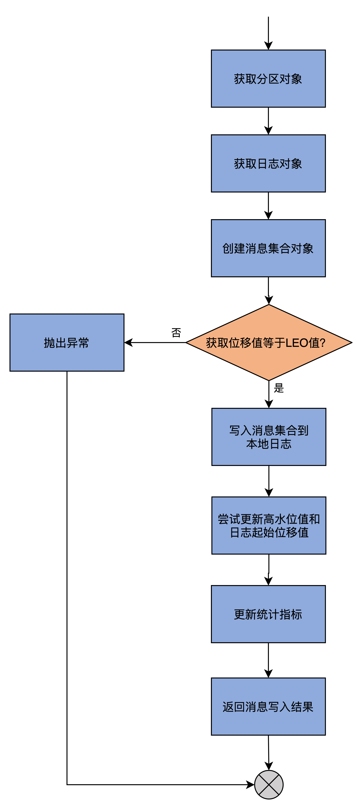
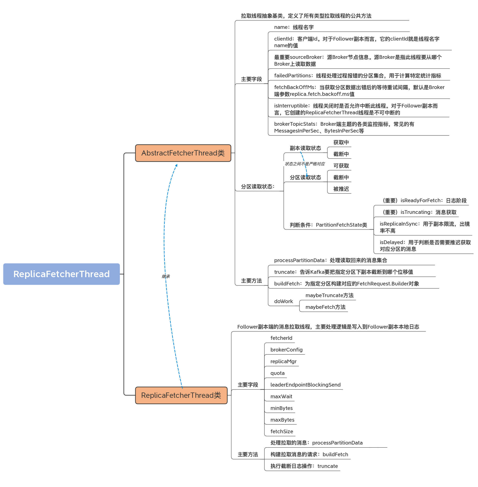

- 00 导读 构建Kafka工程和源码阅读环境、Scala语言热身.md
- 00 开篇词 阅读源码，逐渐成了职业进阶道路上的“必选项”.md
- 00 重磅加餐 带你快速入门Scala语言.md
- 01 日志段：保存消息文件的对象是怎么实现的？.md
- 02 日志（上）：日志究竟是如何加载日志段的？.md
- 03 日志（下）：彻底搞懂Log对象的常见操作.md
- 04 索引（上）：改进的二分查找算法在Kafka索引的应用.md
- 05 索引（下）：位移索引和时间戳索引的区别是什么？.md
- 06 请求通道：如何实现Kafka请求队列？.md
- 07 SocketServer（上）：Kafka到底是怎么应用NIO实现网络通信的？.md
- 08 SocketServer（中）：请求还要区分优先级？.md
- 09 SocketServer（下）：请求处理全流程源码分析.md
- 10 KafkaApis：Kafka最重要的源码入口，没有之一.md
- 11 Controller元数据：Controller都保存有哪些东西？有几种状态？.md
- 12 ControllerChannelManager：Controller如何管理请求发送？.md
- 13 ControllerEventManager：变身单线程后的Controller如何处理事件？.md
- 14 Controller选举是怎么实现的？.md
- 15 如何理解Controller在Kafka集群中的作用？.md
- 16 TopicDeletionManager： Topic是怎么被删除的？.md
- 17 ReplicaStateMachine：揭秘副本状态机实现原理.md
- 18 PartitionStateMachine：分区状态转换如何实现？.md
- 19 TimingWheel：探究Kafka定时器背后的高效时间轮算法.md
- 20 DelayedOperation：Broker是怎么延时处理请求的？.md
- 21 AbstractFetcherThread：拉取消息分几步？.md
- 22 ReplicaFetcherThread：Follower如何拉取Leader消息？.md
- 23 ReplicaManager（上）：必须要掌握的副本管理类定义和核心字段.md
- 24 ReplicaManager（中）：副本管理器是如何读写副本的？.md
- 25 ReplicaManager（下）：副本管理器是如何管理副本的？.md
- 26 MetadataCache：Broker是怎么异步更新元数据缓存的？.md
- 27 消费者组元数据（上）：消费者组都有哪些元数据？.md
- 28 消费者组元数据（下）：Kafka如何管理这些元数据？.md
- 29 GroupMetadataManager：组元数据管理器是个什么东西？.md
- 30 GroupMetadataManager：位移主题保存的只是位移吗？.md
- 31 GroupMetadataManager：查询位移时，不用读取位移主题？.md
- 32 GroupCoordinator：在Rebalance中，Coordinator如何处理成员入组？.md
- 33 GroupCoordinator：在Rebalance中，如何进行组同步？.md
- 特别放送（一）经典的Kafka学习资料有哪些？.md
- 特别放送（三）我是怎么度过日常一天的？.md
- 特别放送（二）一篇文章带你了解参与开源社区的全部流程.md
- 特别放送（五） Kafka 社区的重磅功能：移除 ZooKeeper 依赖.md
- 特别放送（四）20道经典的Kafka面试题详解.md
- 结束语 源码学习，我们才刚上路呢.md
22 ReplicaFetcherThread：Follower如何拉取Leader消息？
你好，我是胡夕。今天，我们继续学习Follower是如何拉取Leader消息的。
要弄明白这个问题，在学习源码的时候，我们需要从父类AbstractFetcherThread开始学起，因为这是理解子类ReplicaFetcherThread的基础。上节课，我们已经学习了AbstractFetcherThread的定义，以及processPartitionData、truncate、buildFetch这三个方法的作用。现在，你应该掌握了拉取线程源码的处理逻辑以及支撑这些逻辑实现的代码结构。
不过，在上节课的末尾，我卖了个关子——我把串联起这三个方法的doWork方法留到了今天这节课。等你今天学完doWork方法，以及这三个方法在子类ReplicaFetcherThread中的实现代码之后，你就能完整地理解Follower副本应用拉取线程（也就是ReplicaFetcherThread线程），从Leader副本获取消息并处理的流程了。
那么，现在我们就开启doWork以及子类ReplicaFetcherThread代码的阅读。
AbstractFetcherThread类：doWork方法
doWork方法是AbstractFetcherThread类的核心方法，是线程的主逻辑运行方法，代码如下：
override def doWork(): Unit = {
maybeTruncate() // 执行副本截断操作
maybeFetch() // 执行消息获取操作
}
怎么样，简单吧？AbstractFetcherThread线程只要一直处于运行状态，就是会不断地重复这两个操作。获取消息这个逻辑容易理解，但是为什么AbstractFetcherThread线程总要不断尝试去做截断呢？
这是因为，分区的Leader可能会随时发生变化。每当有新Leader产生时，Follower副本就必须主动执行截断操作，将自己的本地日志裁剪成与Leader一模一样的消息序列，甚至，Leader副本本身也需要执行截断操作，将LEO调整到分区高水位处。
那么，具体到代码，这两个操作又是如何实现的呢？
首先，我们看看maybeTruncate方法。它的代码不长，还不到10行：
private def maybeTruncate(): Unit = {
// 将所有处于截断中状态的分区依据有无Leader Epoch值进行分组
val (partitionsWithEpochs, partitionsWithoutEpochs) = fetchTruncatingPartitions()
// 对于有Leader Epoch值的分区，将日志截断到Leader Epoch值对应的位移值处
if (partitionsWithEpochs.nonEmpty) {
truncateToEpochEndOffsets(partitionsWithEpochs)
}
// 对于没有Leader Epoch值的分区，将日志截断到高水位值处
if (partitionsWithoutEpochs.nonEmpty) {
truncateToHighWatermark(partitionsWithoutEpochs)
}
}
maybeTruncate方法的逻辑特别简单。
首先，是对分区状态进行分组。既然是做截断操作的，那么该方法操作的就只能是处于截断中状态的分区。代码会判断这些分区是否存在对应的Leader Epoch值，并按照有无Epoch值进行分组。这就是fetchTruncatingPartitions方法做的事情。
我在[第3讲]提到过Leader Epoch机制，它是用来替换高水位值在日志截断中的作用。这里便是Leader Epoch机制典型的应用场景：
- 当分区存在Leader Epoch值时，源码会将副本的本地日志截断到Leader Epoch对应的最新位移值处，即方法truncateToEpochEndOffsets的逻辑实现；
- 相反地，如果分区不存在对应的Leader Epoch记录，那么依然使用原来的高水位机制，调用方法truncateToHighWatermark将日志调整到高水位值处。
由于Leader Epoch机制属于比较高阶的知识内容，这里我们的重点是理解高水位值在截断操作中的应用，我就不再和你详细讲解Leader Epoch机制了。如果你希望深入理解这个机制，你可以研读一下LeaderEpochFileCache类的源码。
因此，我们重点看下truncateToHighWatermark方法的实现代码。
private[server] def truncateToHighWatermark(
partitions: Set[TopicPartition]): Unit = inLock(partitionMapLock) {
val fetchOffsets = mutable.HashMap.empty[TopicPartition, OffsetTruncationState]
// 遍历每个要执行截断操作的分区对象
for (tp <- partitions) {
// 获取分区的分区读取状态
val partitionState = partitionStates.stateValue(tp)
if (partitionState != null) {
// 取出高水位值。分区的最大可读取位移值就是高水位值
val highWatermark = partitionState.fetchOffset
val truncationState = OffsetTruncationState(highWatermark, truncationCompleted = true)
info(s"Truncating partition $tp to local high watermark $highWatermark")
// 执行截断到高水位值
if (doTruncate(tp, truncationState))
fetchOffsets.put(tp, truncationState)
}
}
// 更新这组分区的分区读取状态
updateFetchOffsetAndMaybeMarkTruncationComplete(fetchOffsets)
}
我来和你解释下truncateToHighWatermark方法的逻辑：首先，遍历给定的所有分区；然后，依次为每个分区获取当前的高水位值，并将其保存在前面提到的分区读取状态类中；之后调用doTruncate方法执行真正的日志截断操作。等到将给定的所有分区都执行了对应的操作之后，代码会更新这组分区的分区读取状态。
doTruncate方法底层调用了抽象方法truncate，而truncate方法是在ReplicaFetcherThread中实现的。我们一会儿再详细说它。至于updateFetchOffsetAndMaybeMarkTruncationComplete方法，是一个只有十几行代码的私有方法。我就把它当作课后思考题留给你，由你来思考一下它是做什么用的吧。
说完了maybeTruncate方法，我们再看看maybeFetch方法，代码如下：
private def maybeFetch(): Unit = {
val fetchRequestOpt = inLock(partitionMapLock) {
// 为partitionStates中的分区构造FetchRequest
// partitionStates中保存的是要去获取消息的分区以及对应的状态
val ResultWithPartitions(fetchRequestOpt, partitionsWithError) =
buildFetch(partitionStates.partitionStateMap.asScala)
// 处理出错的分区，处理方式主要是将这个分区加入到有序Map末尾
// 等待后续重试
handlePartitionsWithErrors(partitionsWithError, "maybeFetch")
// 如果当前没有可读取的分区，则等待fetchBackOffMs时间等候后续重试
if (fetchRequestOpt.isEmpty) {
trace(s"There are no active partitions. Back off for $fetchBackOffMs ms before sending a fetch request")
partitionMapCond.await(fetchBackOffMs, TimeUnit.MILLISECONDS)
}
fetchRequestOpt
}
// 发送FETCH请求给Leader副本，并处理Response
fetchRequestOpt.foreach { case ReplicaFetch(sessionPartitions, fetchRequest) =>
processFetchRequest(sessionPartitions, fetchRequest)
}
}
同样地，maybeFetch做的事情也基本可以分为3步。
第1步，为partitionStates中的分区构造FetchRequest对象，严格来说是FetchRequest.Builder对象。构造了Builder对象之后，通过调用其build方法，就能创建出所需的FetchRequest请求对象。
这里的partitionStates中保存的是，要去获取消息的一组分区以及对应的状态信息。这一步的输出结果是两个对象：
- 一个对象是ReplicaFetch，即要读取的分区核心信息+ FetchRequest.Builder对象。而这里的核心信息，就是指要读取哪个分区，从哪个位置开始读，最多读多少字节，等等。
- 另一个对象是一组出错分区。
第2步，处理这组出错分区。处理方式是将这组分区加入到有序Map末尾等待后续重试。如果发现当前没有任何可读取的分区，代码会阻塞等待一段时间。
第3步，发送FETCH请求给对应的Leader副本，并处理相应的Response，也就是processFetchRequest方法要做的事情。
processFetchRequest是AbstractFetcherThread所有方法中代码量最多的方法，逻辑也有些复杂。为了更好地理解它，我提取了其中的精华代码展示给你，并在每个关键步骤上都加了注释：
private def processFetchRequest(sessionPartitions:
util.Map[TopicPartition, FetchRequest.PartitionData],
fetchRequest: FetchRequest.Builder): Unit = {
val partitionsWithError = mutable.Set[TopicPartition]()
var responseData: Map[TopicPartition, FetchData] = Map.empty
try {
trace(s"Sending fetch request $fetchRequest")
// 给Leader发送FETCH请求
responseData = fetchFromLeader(fetchRequest)
} catch {
......
}
// 更新请求发送速率指标
fetcherStats.requestRate.mark()
if (responseData.nonEmpty) {
inLock(partitionMapLock) {
responseData.foreach { case (topicPartition, partitionData) =>
Option(partitionStates.stateValue(topicPartition)).foreach { currentFetchState =>
// 获取分区核心信息
val fetchPartitionData = sessionPartitions.get(topicPartition)
// 处理Response的条件：
// 1. 要获取的位移值和之前已保存的下一条待获取位移值相等
// 2. 当前分区处于可获取状态
if (fetchPartitionData != null && fetchPartitionData.fetchOffset == currentFetchState.fetchOffset && currentFetchState.isReadyForFetch) {
// 提取Response中的Leader Epoch值
val requestEpoch = if (fetchPartitionData.currentLeaderEpoch.isPresent) Some(fetchPartitionData.currentLeaderEpoch.get().toInt) else None
partitionData.error match {
// 如果没有错误
case Errors.NONE =>
try {
// 交由子类完成Response的处理
val logAppendInfoOpt = processPartitionData(topicPartition, currentFetchState.fetchOffset,
partitionData)
logAppendInfoOpt.foreach { logAppendInfo =>
val validBytes = logAppendInfo.validBytes
val nextOffset = if (validBytes > 0) logAppendInfo.lastOffset + 1 else currentFetchState.fetchOffset
val lag = Math.max(0L, partitionData.highWatermark - nextOffset)
fetcherLagStats.getAndMaybePut(topicPartition).lag = lag
if (validBytes > 0 && partitionStates.contains(topicPartition)) {
val newFetchState = PartitionFetchState(nextOffset, Some(lag), currentFetchState.currentLeaderEpoch, state = Fetching)
// 将该分区放置在有序Map读取顺序的末尾，保证公平性
partitionStates.updateAndMoveToEnd(
topicPartition, newFetchState)
fetcherStats.byteRate.mark(validBytes)
}
}
} catch {
......
}
// 如果读取位移值越界，通常是因为Leader发生变更
case Errors.OFFSET_OUT_OF_RANGE =>
// 调整越界，主要办法是做截断
if (handleOutOfRangeError(topicPartition, currentFetchState, requestEpoch))
// 如果依然不能成功，加入到出错分区列表
partitionsWithError += topicPartition
// 如果Leader Epoch值比Leader所在Broker上的Epoch值要新
case Errors.UNKNOWN_LEADER_EPOCH =>
debug(s"Remote broker has a smaller leader epoch for partition $topicPartition than " +
s"this replica's current leader epoch of ${currentFetchState.currentLeaderEpoch}.")
// 加入到出错分区列表
partitionsWithError += topicPartition
// 如果Leader Epoch值比Leader所在Broker上的Epoch值要旧
case Errors.FENCED_LEADER_EPOCH =>
if (onPartitionFenced(topicPartition, requestEpoch)) partitionsWithError += topicPartition
// 如果Leader发生变更
case Errors.NOT_LEADER_FOR_PARTITION =>
debug(s"Remote broker is not the leader for partition $topicPartition, which could indicate " +
"that the partition is being moved")
// 加入到出错分区列表
partitionsWithError += topicPartition
case _ =>
error(s"Error for partition $topicPartition at offset ${currentFetchState.fetchOffset}",
partitionData.error.exception)
// 加入到出错分区列表
partitionsWithError += topicPartition
}
}
}
}
}
}
if (partitionsWithError.nonEmpty) {
// 处理出错分区列表
handlePartitionsWithErrors(partitionsWithError, "processFetchRequest")
}
}
为了方便你记忆，我先用一张流程图来说明下processFetchRequest方法的执行逻辑：

结合着代码注释和流程图，我再和你解释下processFetchRequest的核心逻辑吧。这样你肯定就能明白拉取线程是如何执行拉取动作的了。
我们可以把这个逻辑，分为以下3大部分。
第1步，调用fetchFromLeader方法给Leader发送FETCH请求，并阻塞等待Response的返回，然后更新FETCH请求发送速率的监控指标。
第2步，拿到Response之后，代码从中取出分区的核心信息，然后比较要读取的位移值，和当前AbstractFetcherThread线程缓存的、该分区下一条待读取的位移值是否相等，以及当前分区是否处于可获取状态。
如果不满足这两个条件，说明这个Request可能是一个之前等待了许久都未处理的请求，压根就不用处理了。
相反，如果满足这两个条件且Response没有错误，代码会提取Response中的Leader Epoch值，然后交由子类实现具体的Response处理，也就是调用processPartitionData方法。之后将该分区放置在有序Map的末尾以保证公平性。而如果该Response有错误，那么就调用对应错误的定制化处理逻辑，然后将出错分区加入到出错分区列表中。
第3步，调用handlePartitionsWithErrors方法，统一处理上一步处理过程中出现错误的分区。
子类：ReplicaFetcherThread
到此，AbstractFetcherThread类的学习我们就完成了。接下来，我们再看下Follower副本侧使用的ReplicaFetcherThread子类。
前面说过了，ReplicaFetcherThread继承了AbstractFetcherThread类。ReplicaFetcherThread是Follower副本端创建的线程，用于向Leader副本拉取消息数据。我们依然从类定义和重要方法两个维度来学习这个子类的源码。
ReplicaFetcherThread类的源码位于server包下的同名scala文件中。这是一个300多行的小文件，因为大部分的处理逻辑都在父类AbstractFetcherThread中定义过了。
类定义及字段
我们先学习下ReplicaFetcherThread类的定义和字段：
class ReplicaFetcherThread(name: String,
fetcherId: Int,
sourceBroker: BrokerEndPoint,
brokerConfig: KafkaConfig,
failedPartitions: FailedPartitions,
replicaMgr: ReplicaManager,
metrics: Metrics,
time: Time,
quota: ReplicaQuota,
leaderEndpointBlockingSend: Option[BlockingSend] = None)
extends AbstractFetcherThread(name = name,
clientId = name,
sourceBroker = sourceBroker,
failedPartitions,
fetchBackOffMs = brokerConfig.replicaFetchBackoffMs,
isInterruptible = false,
replicaMgr.brokerTopicStats) {
// 副本Id就是副本所在Broker的Id
private val replicaId = brokerConfig.brokerId
......
// 用于执行请求发送的类
private val leaderEndpoint = leaderEndpointBlockingSend.getOrElse(
new ReplicaFetcherBlockingSend(sourceBroker, brokerConfig, metrics, time, fetcherId,
s"broker-$replicaId-fetcher-$fetcherId", logContext))
// Follower发送的FETCH请求被处理返回前的最长等待时间
private val maxWait = brokerConfig.replicaFetchWaitMaxMs
// 每个FETCH Response返回前必须要累积的最少字节数
private val minBytes = brokerConfig.replicaFetchMinBytes
// 每个合法FETCH Response的最大字节数
private val maxBytes = brokerConfig.replicaFetchResponseMaxBytes
// 单个分区能够获取到的最大字节数
private val fetchSize = brokerConfig.replicaFetchMaxBytes
// 维持某个Broker连接上获取会话状态的类
val fetchSessionHandler = new FetchSessionHandler(
logContext, sourceBroker.id)
......
}
ReplicaFetcherThread类的定义代码虽然有些长，但你会发现没那么难懂，因为构造函数中的大部分字段我们上节课都学习过了。现在，我们只要学习ReplicaFetcherThread类特有的几个字段就可以了。
- fetcherId：Follower拉取的线程Id，也就是线程的编号。单台Broker上，允许存在多个ReplicaFetcherThread线程。Broker端参数num.replica.fetchers，决定了Kafka到底创建多少个Follower拉取线程。
- brokerConfig：KafkaConfig类实例。虽然我们没有正式学习过它的源码，但之前学过的很多组件代码中都有它的身影。它封装了Broker端所有的参数信息。同样地，ReplicaFetcherThread类也是通过它来获取Broker端指定参数的值。
- replicaMgr：副本管理器。该线程类通过副本管理器来获取分区对象、副本对象以及它们下面的日志对象。
- quota：用做限流。限流属于高阶用法，如果你想深入理解这部分内容的话，可以自行阅读ReplicationQuotaManager类的源码。现在，只要你下次在源码中碰到quota字样的，知道它是用作Follower副本拉取速度控制就行了。
- leaderEndpointBlockingSend：这是用于实现同步发送请求的类。所谓的同步发送，是指该线程使用它给指定Broker发送请求，然后线程处于阻塞状态，直到接收到Broker返回的Response。
除了构造函数中定义的字段之外，ReplicaFetcherThread类还定义了与消息获取息息相关的4个字段。
- maxWait：Follower发送的FETCH请求被处理返回前的最长等待时间。它是Broker端参数replica.fetch.wait.max.ms的值。
- minBytes：每个FETCH Response返回前必须要累积的最少字节数。它是Broker端参数replica.fetch.min.bytes的值。
- maxBytes：每个合法FETCH Response的最大字节数。它是Broker端参数replica.fetch.response.max.bytes的值。
- fetchSize：单个分区能够获取到的最大字节数。它是Broker端参数replica.fetch.max.bytes的值。
这4个参数都是FETCH请求的参数，主要控制了Follower副本拉取Leader副本消息的行为，比如一次请求到底能够获取多少字节的数据，或者当未达到累积阈值时，FETCH请求等待多长时间等。
重要方法
接下来，我们继续学习ReplicaFetcherThread的3个重要方法：processPartitionData、buildFetch和truncate。
为什么是这3个方法呢？因为它们代表了Follower副本拉取线程要做的最重要的三件事：处理拉取的消息、构建拉取消息的请求，以及执行截断日志操作。
processPartitionData方法
我们先来看processPartitionData方法。AbstractFetcherThread线程从Leader副本拉取回消息后，需要调用processPartitionData方法进行后续动作。该方法的代码很长，我给其中的关键步骤添加了注释：
override def processPartitionData(
topicPartition: TopicPartition,
fetchOffset: Long,
partitionData: FetchData): Option[LogAppendInfo] = {
val logTrace = isTraceEnabled
// 从副本管理器获取指定主题分区对象
val partition = replicaMgr.nonOfflinePartition(topicPartition).get
// 获取日志对象
val log = partition.localLogOrException
// 将获取到的数据转换成符合格式要求的消息集合
val records = toMemoryRecords(partitionData.records)
maybeWarnIfOversizedRecords(records, topicPartition)
// 要读取的起始位移值如果不是本地日志LEO值则视为异常情况
if (fetchOffset != log.logEndOffset)
throw new IllegalStateException("Offset mismatch for partition %s: fetched offset = %d, log end offset = %d.".format(
topicPartition, fetchOffset, log.logEndOffset))
if (logTrace)
trace("Follower has replica log end offset %d for partition %s. Received %d messages and leader hw %d"
.format(log.logEndOffset, topicPartition, records.sizeInBytes, partitionData.highWatermark))
// 写入Follower副本本地日志
val logAppendInfo = partition.appendRecordsToFollowerOrFutureReplica(records, isFuture = false)
if (logTrace)
trace("Follower has replica log end offset %d after appending %d bytes of messages for partition %s"
.format(log.logEndOffset, records.sizeInBytes, topicPartition))
val leaderLogStartOffset = partitionData.logStartOffset
// 更新Follower副本的高水位值
val followerHighWatermark =
log.updateHighWatermark(partitionData.highWatermark)
// 尝试更新Follower副本的Log Start Offset值
log.maybeIncrementLogStartOffset(leaderLogStartOffset, LeaderOffsetIncremented)
if (logTrace)
trace(s"Follower set replica high watermark for partition $topicPartition to $followerHighWatermark")
// 副本消息拉取限流
if (quota.isThrottled(topicPartition))
quota.record(records.sizeInBytes)
// 更新统计指标值
if (partition.isReassigning && partition.isAddingLocalReplica)
brokerTopicStats.updateReassignmentBytesIn(records.sizeInBytes)
brokerTopicStats.updateReplicationBytesIn(records.sizeInBytes)
// 返回日志写入结果
logAppendInfo
}
在详细解释前，我使用一张流程图帮助你直观地理解这个方法到底做了什么事情。

processPartitionData方法中的process，实际上就是写入Follower副本本地日志的意思。因此，这个方法的主体逻辑，就是调用分区对象Partition的appendRecordsToFollowerOrFutureReplica写入获取到的消息。如果你沿着这个写入方法一路追下去，就会发现它调用的是我们在[第2讲]中讲到过的appendAsFollower方法。你看一切都能串联起来，源码也没什么大不了的，对吧？
当然，仅仅写入日志还不够。我们还要做一些更新操作。比如，需要更新Follower副本的高水位值，即将FETCH请求Response中包含的高水位值作为新的高水位值，同时代码还要尝试更新Follower副本的Log Start Offset值。
那为什么Log Start Offset值也可能发生变化呢？这是因为Leader的Log Start Offset可能发生变化，比如用户手动执行了删除消息的操作等。Follower副本的日志需要和Leader保持严格的一致，因此，如果Leader的该值发生变化，Follower自然也要发生变化，以保持一致。
除此之外，processPartitionData方法还会更新其他一些统计指标值，最后将写入结果返回。
buildFetch方法
接下来， 我们看下buildFetch方法。此方法的主要目的是，构建发送给Leader副本所在Broker的FETCH请求。它的代码如下：
override def buildFetch(
partitionMap: Map[TopicPartition, PartitionFetchState]): ResultWithPartitions[Option[ReplicaFetch]] = {
val partitionsWithError = mutable.Set[TopicPartition]()
val builder = fetchSessionHandler.newBuilder(partitionMap.size, false)
// 遍历每个分区，将处于可获取状态的分区添加到builder后续统一处理
// 对于有错误的分区加入到出错分区列表
partitionMap.foreach { case (topicPartition, fetchState) =>
if (fetchState.isReadyForFetch && !shouldFollowerThrottle(quota, fetchState, topicPartition)) {
try {
val logStartOffset = this.logStartOffset(topicPartition)
builder.add(topicPartition, new FetchRequest.PartitionData(
fetchState.fetchOffset, logStartOffset, fetchSize, Optional.of(fetchState.currentLeaderEpoch)))
} catch {
case _: KafkaStorageException =>
partitionsWithError += topicPartition
}
}
}
val fetchData = builder.build()
val fetchRequestOpt = if (fetchData.sessionPartitions.isEmpty && fetchData.toForget.isEmpty) {
None
} else {
// 构造FETCH请求的Builder对象
val requestBuilder = FetchRequest.Builder
.forReplica(fetchRequestVersion, replicaId, maxWait, minBytes, fetchData.toSend)
.setMaxBytes(maxBytes)
.toForget(fetchData.toForget)
.metadata(fetchData.metadata)
Some(ReplicaFetch(fetchData.sessionPartitions(), requestBuilder))
}
// 返回Builder对象以及出错分区列表
ResultWithPartitions(fetchRequestOpt, partitionsWithError)
}
同样，我使用一张图来展示其完整流程。

这个方法的逻辑比processPartitionData简单。前面说到过，它就是构造FETCH请求的Builder对象然后返回。有了Builder对象，我们就可以分分钟构造出FETCH请求了，仅需要调用builder.build()即可。
当然，这个方法的一个副产品是汇总出错分区，这样的话，调用方后续可以统一处理这些出错分区。值得一提的是，在构造Builder的过程中，源码会用到ReplicaFetcherThread类定义的那些与消息获取相关的字段，如maxWait、minBytes和maxBytes。
truncate方法
最后，我们看下truncate方法的实现。这个方法的主要目的是对给定分区执行日志截断操作。代码如下：
override def truncate(
tp: TopicPartition,
offsetTruncationState: OffsetTruncationState): Unit = {
// 拿到分区对象
val partition = replicaMgr.nonOfflinePartition(tp).get
//拿到分区本地日志
val log = partition.localLogOrException
// 执行截断操作，截断到的位置由offsetTruncationState的offset指定
partition.truncateTo(offsetTruncationState.offset, isFuture = false)
if (offsetTruncationState.offset < log.highWatermark)
warn(s"Truncating $tp to offset ${offsetTruncationState.offset} below high watermark " +
s"${log.highWatermark}")
if (offsetTruncationState.truncationCompleted)
replicaMgr.replicaAlterLogDirsManager
.markPartitionsForTruncation(brokerConfig.brokerId, tp,
offsetTruncationState.offset)
}
总体来说，truncate方法利用给定的offsetTruncationState的offset值，对给定分区的本地日志进行截断操作。该操作由Partition对象的truncateTo方法完成，但实际上底层调用的是Log的truncateTo方法。truncateTo方法的主要作用，是将日志截断到小于给定值的最大位移值处。
总结
好了，我们总结一下。就像我在开头时所说，AbstractFetcherThread线程的doWork方法把上一讲提到的3个重要方法全部连接在一起，共同完整了拉取线程要执行的逻辑，即日志截断（truncate）+日志获取（buildFetch）+日志处理（processPartitionData），而其子类ReplicaFetcherThread类是真正实现该3个方法的地方。如果用一句话归纳起来，那就是：Follower副本利用ReplicaFetcherThread线程实时地从Leader副本拉取消息并写入到本地日志，从而实现了与Leader副本之间的同步。以下是一些要点：
- doWork方法：拉取线程工作入口方法，联结所有重要的子功能方法，如执行截断操作，获取Leader副本消息以及写入本地日志。
- truncate方法：根据Leader副本返回的位移值和Epoch值执行本地日志的截断操作。
- buildFetch方法：为一组特定分区构建FetchRequest对象所需的数据结构。
- processPartitionData方法：处理从Leader副本获取到的消息，主要是写入到本地日志中。

实际上，今天的内容中多次出现副本管理器的身影。如果你仔细查看代码，你会发现Follower副本正是利用它来获取对应分区Partition对象的，然后依靠该对象执行消息写入。那么，副本管理器还有哪些其他功能呢？下一讲我将一一为你揭晓。
课后讨论
你可以去查阅下源码，说说updateFetchOffsetAndMaybeMarkTruncationComplete方法是做什么用的吗？
欢迎在留言区写下你的思考和答案，跟我交流讨论，也欢迎你把今天的内容分享给你的朋友。
© 2019 - 2023 Liangliang Lee. Powered by Vert.x and hexo-theme-book.